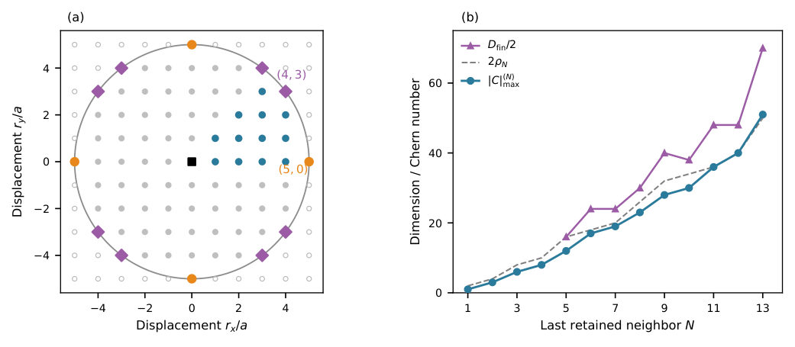
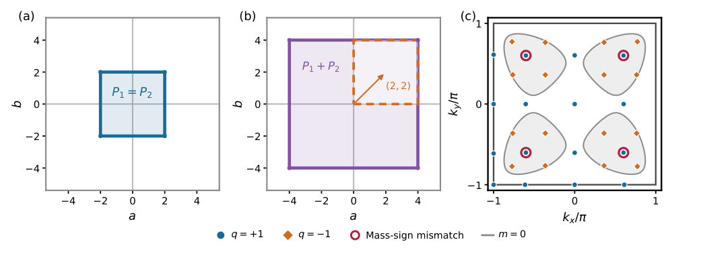

Authors: Christopher Arriagada Cortés, Vladimir Juričić
Type: theory · Category: other · PDF: https://arxiv.org/pdf/2609.31437v1
Analysis basis: full PDF text, analyzed in chunks


Summary. This work investigates the fundamental limits on the Chern number in lattice models by restricting the hopping interactions to a finite range. By analyzing the interplay between the number of Dirac points and the allowed mass sign patterns, the authors establish sharp upper bounds. The key finding is that the 13th-neighbor hopping can achieve a Chern number (51) that surpasses bounds set by shorter-range interactions, providing a design principle for high-Chern band engineering.
Why it may be interesting. The geometric viewpoint provided for constraining the Chern number via mass-sign patterns offers a general design principle applicable to moiré systems and other lattice models relevant to topological physics.
Main problem. The paper aims to determine the maximum absolute Chern number achievable in a lattice model when the hopping amplitudes are restricted to a finite range.
Main result. The maximal Chern numbers found for 11th, 12th, and 13th-neighbor hopping are 36, 40, and 51, respectively, with the 13th-neighbor case exceeding previous theoretical bounds.
Method. The analysis uses algebraic zero counting and mass-weighted sum rules derived from the Hamiltonian structure to establish global bounds on the Chern number.
Model / system. The study analyzes a finite-range extension of the Qi--Wu--Zhang model on a square lattice, characterized by a Hamiltonian involving hybridization and mass terms dependent on hopping neighbors.
Key observables. Chern number ($|C|$), number of Dirac points ($N_0$), and the mass sign pattern at these points.
Important parameters / regimes. The hopping range, specified by the maximum neighbor shell considered (e.g., 11th, 12th, 13th neighbor).
Assumptions / limitations. The constraints are derived by considering how finite-range hopping limits the independent contributions of the mass terms to the total Chern number.
Figures summary. Figure 1 compares calculated $|C|_{ ext{max}}$ values for different neighbor shells, while Figure 2 illustrates the zero-counting process for the fifth-neighbor case.
Paper structure. The paper establishes the physical problem, derives theoretical bounds using zero counting and mass constraints, calculates the maximum Chern numbers for increasing hopping ranges, and discusses the implications of these bounds being broken by larger hopping ranges.
Finite-range hopping constrains both the number of Dirac points and the masses that gap them. We determine the maximal absolute Chern numbers of an isotropic finite-range extension of the Qi--Wu--Zhang model on a square lattice through thirteenth-neighbor hopping. Algebraic zero counting and mass-weighted sum rules yield global bounds, and we construct explicit Hamiltonians that saturate them. We find $|C|_{\max}=36,40,51$ for eleventh-, twelfth-, and thirteenth-neighbor hopping. Equal numbers of Dirac points can produce different maxima because finite-range mass harmonics distinguish opposite vortex charges differently. Twice the squared hopping radius bounds every maximum through twelfth-neighbor hopping and is saturated at the eleventh and twelfth, but the thirteenth-neighbor maximum exceeds it. Thus finite-range hopping constrains the maximal Chern number in two complementary ways: through the number of Dirac vortices it can generate and through the mass-sign patterns it can assign to them. This geometric viewpoint provides a design principle for high-Chern bands and a route to analogous bounds in moiré and other lattice systems.